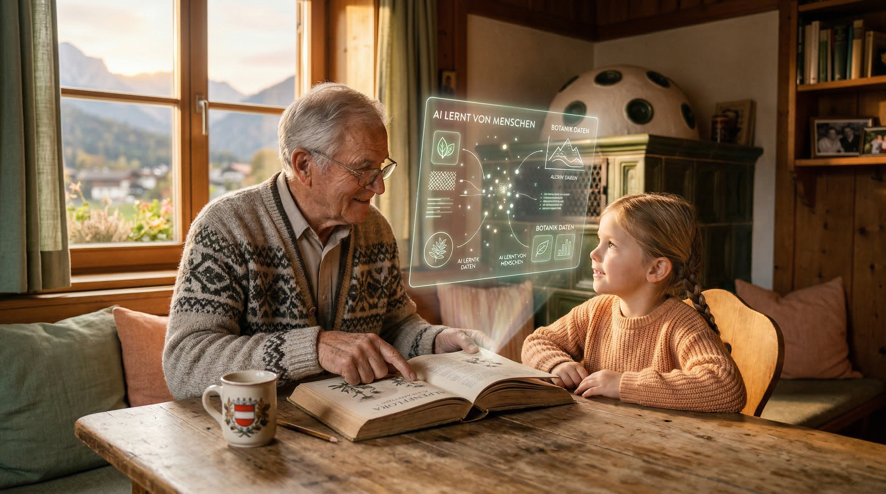

Vertrauen ist uns wichtig
Wir verstehen, dass Sie sich um die Bildung Ihres Kindes sorgen. Deshalb erklären wir offen, wie wir KI einsetzen, welche Daten wir speichern und wie wir Lernfortschritte sicher dokumentieren.

Vertrauen durch Transparenz
Sie möchten wissen, was Ihr Kind bei PLU lernt und wie KI den Lernprozess unterstützt? Hier finden Sie alle Informationen – transparent und verständlich.
"KI ist kein Ersatz für Lehrer, sondern ein Werkzeug wie ein Taschenrechner oder ein Lexikon – nur eben eines, das individuell auf Ihr Kind eingeht und es dort abholt, wo es gerade steht."
Wir verstehen, dass Sie sich um die Bildung Ihres Kindes sorgen. Deshalb erklären wir offen, wie wir KI einsetzen, welche Daten wir speichern und wie wir Lernfortschritte sicher dokumentieren.
Ein strukturierter Lernpfad mit vier wichtigen Stationen
Grundlagen der Künstlichen Intelligenz: Was ist KI? Wie funktioniert sie? Wo sind ihre Grenzen?
Mehr erfahrenPraktische Anwendung: Richtiges Prompting, kritisches Hinterfragen von KI-Antworten, effektive Zusammenarbeit.
Mehr erfahrenVerantwortungsvoller Umgang: Datenschutz, Urheberrecht, ethische Grundsätze, Grenzen erkennen.
Mehr erfahrenEigenständige Projekte: Von der Idee zur Umsetzung – mit KI als kreativem Partner.
Mehr erfahrenKI-Kompetenz wird in fast allen Berufen erwartet. Ihr Kind hat einen Vorsprung.
Mehr erfahrenKI antwortet nicht immer richtig. Ihr Kind lernt, Informationen zu prüfen und zu hinterfragen.
Mehr erfahrenKI ist ein Werkzeug, keine Gefahr für kreative Fähigkeiten – im Gegenteil, sie erweitert sie.
Mehr erfahrenIhr Kind lernt, eigenverantwortlich zu recherchieren und Projekte umzusetzen.
Mehr erfahrenWie wir sicherstellen, dass Ihr Kind wirklich lernt
Wir nutzen KI als Lerntool, nicht als Abschreibmaschine – echtes Verständnis steht im Vordergrund.
Jede Abgabe wird auf Plausibilität geprüft – wir erkennen, wenn etwas nicht passt.
Mündliche Prüfungen und Projektpräsentationen ergänzen schriftliche Arbeiten.
Transparenz bei der KI-Nutzung: Wer KI nutzt, dokumentiert es ehrlich.
Fokus auf Prozess statt Ergebnis: Der Lernweg zählt mehr als die perfekte Antwort.
Wir speichern nur das Minimum. Keine sensiblen Daten, keine Weitergabe an Dritte.
Alle Inhalte werden auf Altersangemessenheit geprüft. Keine unangemessenen Themen.
Sie sehen jederzeit, was Ihr Kind lernt. Alle Fortschritte sind nachvollziehbar.
Sie behalten die Kontrolle. Jederzeit einsehbar, jederzeit anpassbar.
Sehen Sie sich die Inhalte an. Wir haben nichts zu verbergen.
Sprechen Sie mit Ihrem Kind über das Gelernte. Gemeinsam lernen ist effektiver.
Ihre Rückmeldung hilft uns. Erzählen Sie uns von Ihren Erfahrungen.
Haben Sie noch Fragen? Wir sind für Sie da. Erfahren Sie mehr über unsere KI-Academies und wie Ihr Kind am besten startet.
Zu den KI Akademien"Die beste Bildung ist die, die nicht nur Wissen vermittelt, sondern auch Neugier weckt und den Mut fördert, neue Wege zu gehen. Mit KI haben wir ein Werkzeug, das genau das ermöglicht."
Kostenlose, hochwertige KI-Bildung für alle zugänglich machen – unabhängig von Alter, Vorkenntnissen oder Budget.
Jede Unterstützung zählt. Ob einmalig oder regelmäßig – du ermöglichst Bildung und machst das Universum größer.
Jetzt unterstützenAls Eltern möchten Sie das Beste für Ihr Kind. Das verstehen wir voll und ganz. Deshalb legen wir bei PLU höchsten Wert auf Transparenz, Datenschutz und einen verantwortungsvollen Umgang mit Künstlicher Intelligenz.
Wir sehen KI nicht als Ersatz für pädagogische Begleitung, sondern als Werkzeug, das Lernen individualisiert und Ihr Kind dort abholt, wo es gerade steht. Unsere Methoden sind erprobt, unsere Inhalte altersgerecht und unsere Technologie stets unter menschlicher Kontrolle.
Bevor Ihr Kind KI nutzt, lernt es, was KI überhaupt ist und wie sie funktioniert. Wir erklären die Technologie auf verständliche Weise – ohne Fachchinesisch, aber auch ohne zu vereinfachen.
Ihr Kind versteht, dass KI keine allwissende Instanz ist, sondern ein mathematisches Modell, das aus Daten Muster lernt. Es erkennt die Grenzen von KI und lernt, wann menschliches Urteilsvermögen unverzichtbar bleibt.
In der zweiten Phase geht es um die praktische Anwendung. Ihr Kind lernt, wie man KI gezielt einsetzt, um Aufgaben effizienter zu lösen, Ideen zu entwickeln oder Inhalte zu strukturieren.
Wir legen besonderen Wert auf das sogenannte Prompting: die Kunst, KI so zu fragen, dass man nützliche, präzise und kreative Antworten erhält. Gleichzeitig üben wir, wie man KI-Outputs kritisch hinterfragt und mit eigenem Wissen abgleicht.
Nicht alles, was KI ausgibt, ist richtig oder gut. Deshalb ist ein zentraler Bestandteil unseres Unterrichts das kritische Bewerten von KI-generierten Inhalten. Ihr Kind lernt, systematisch zu prüfen, ob ein Output plausibel, fair und sachlich korrekt ist.
Wir behandeln auch die ethischen und rechtlichen Dimensionen: Datenschutz, Urheberrecht, Bias in Algorithmen und die Frage, welche Daten man einer KI anvertrauen sollte – und welche nicht.
Im letzten Schritt geht es darum, KI nicht nur zu verstehen und zu nutzen, sondern aktiv mitzugestalten. Ihr Kind entwickelt eigene kleine Projekte, experimentiert mit KI-Tools und überlegt, wie die Technologie in Zukunft verantwortungsvoll eingesetzt werden kann.
Dieser kreative und gestalterische Teil fördert nicht nur technische Kompetenz, sondern auch Unternehmergeist und gesellschaftliches Bewusstsein. Ihr Kind wird vom Konsumenten zum gestaltenden Akteur.
Künstliche Intelligenz wird in nahezu allen Berufsfeldern eine Schlüsselrolle spielen. Wer frühzeitig versteht, wie KI funktioniert und wie man sie sinnvoll einsetzt, hat einen erheblichen Vorsprung – nicht nur in der Schule, sondern auch später im Berufsleben.
Bei PLU bereiten wir Ihr Kind nicht auf einen bestimmten Job vor, sondern auf eine Welt, in der sich Technologien rasant verändern. Wir stärken die Fähigkeit, sich kontinuierlich weiterzubilden und neue Tools souverän zu nutzen.
KI-Systeme können täuschen. Sie produzieren manchmal halluzinierte Fakten, übernehmen Vorurteile aus ihren Trainingsdaten oder formulieren Dinge so überzeugend, dass man sie unhinterfragt glaubt. Genau deshalb ist kritisches Denken eine der wichtigsten Kompetenzen, die wir vermitteln.
Ihr Kind lernt, Informationen nicht nur zu konsumieren, sondern aktiv zu prüfen. Es hinterfragt Quellen, vergleicht verschiedene Perspektiven und bildet sich ein eigenes, begründetes Urteil – unabhängig davon, ob die Information von einer KI oder einem Menschen stammt.
Ein weit verbreitetes Missverständnis ist, dass KI die Kreativität ersetzt. Das Gegenteil ist der Fall: KI kann Ideen beschleunigen, Varianten generieren und kreative Blockaden lösen. Sie ist ein Werkzeug, das menschliche Kreativität erweitert, nicht ersetzt.
Bei PLU nutzen wir KI, um Denkprozesse anzustoßen und neue Wege zu zeigen. Ihr Kind bleibt jedoch immer der Gestalter: Es entscheidet, welche Ideen gut sind, gibt ihnen eine persönliche Note und setzt sie in eigene Projekte um.
Eines unserer zentralen Ziele ist es, Ihr Kind zu einem selbstständigen Lerner zu machen. KI kann dabei helfen, Informationen schneller zu finden und Lösungsansätze zu entwickeln – aber die Initiative, das Durchhaltevermögen und die eigene Urteilsbildung kommen vom Lernenden selbst.
Wir fördern Projektarbeit, eigenverantwortliches Recherchieren und das Setzen persönlicher Lernziele. Ihr Kind lernt, nicht nur Anweisungen zu folgen, sondern selbstständig Fragen zu stellen, Wege zu finden und Projekte von der Idee bis zur Umsetzung zu begleiten.
Wir nutzen KI als Werkzeug, nicht als Ersatz für eigenes Denken.
KI ist ein leistungsstarkes Werkzeug, aber die Kontrolle und Verantwortung bleiben beim Menschen. Wir prüfen KI-Outputs kritisch und treffen selbst informierte Entscheidungen.
Wir fördern kritisches Hinterfragen und eigenständiges Urteilsvermögen.
KI kann Fehler machen, Halluzinationen produzieren oder biased sein. Kritisches Denken ist die beste Verteidigung gegen Fehlinformation.
Wir respektieren Datenschutz und Privatsphäre.
Personenbezogene Daten gehören geschützt. Wir gehen verantwortungsvoll mit Informationen um und schützen die Privatsphäre aller.
Wir bilden aus, nicht nur ab – Wissen wird weitergegeben und erweitert.
KI reproduziert bestehendes Wissen. Menschen schaffen neues Wissen und geben es weiter – so entwickelt sich Gesellschaft.
Wir bleiben menschlich in einer technologischen Welt.
Technologie soll unsere Menschlichkeit erweitern, nicht ersetzen. Wir pflegen zwischenmenschliche Beziehungen und soziale Kompetenzen.
Der Schutz personenbezogener Daten hat für uns höchste Priorität. Wir speichern nur das absolut notwendige Minimum an Informationen und geben keine Daten an Dritte weiter. Alle unsere Systeme entsprechen den Anforderungen der DSGVO.
Bei der Arbeit mit KI-Tools achten wir penibel darauf, dass keine sensiblen oder persönlichen Daten in öffentliche Modelle eingegeben werden. Für vertrauliche Inhalte nutzen wir ausschließlich sichere, lokal betriebene oder enterprise-grade Lösungen.
Alle Inhalte, die Ihr Kind bei PLU durchläuft, werden auf Altersangemessenheit und didaktische Qualität geprüft. Wir zeigen keine gewaltverherrlichenden, diskriminierenden oder sexualisierten Inhalte.
Auch bei der Nutzung von KI-Tools setzen wir auf sichere Umgebungen mit integrierten Content-Filtern. So stellen wir sicher, dass die generierten Antworten für die jeweilige Altersgruppe geeignet sind und keine unangemessenen Themen aufwerfen.
Wir dokumentieren offen, wo und wie KI eingesetzt wird. Transparenz schafft Vertrauen und ermöglicht informierte Entscheidungen.
Sie behalten jederzeit die Kontrolle. Als Eltern haben Sie das Recht, einzusehen, was Ihr Kind lernt, welche Fortschritte es macht und welche Tools dabei zum Einsatz kommen.
Unsere Plattform ist so gestaltet, dass keine automatisierten Entscheidungen über den Lernenden getroffen werden. Lehrende und Eltern können jederzeit eingreifen, Lerninhalte anpassen und den individuellen Bedürfnissen des Kindes gerecht werden.
Wir haben nichts zu verbergen. Als Eltern sind Sie herzlich eingeladen, sich die Inhalte und Lernmaterialien anzusehen, die Ihr Kind bei PLU durchläuft.
Transparenz ist das Fundament von Vertrauen. Je besser Sie verstehen, was Ihr Kind lernt und warum bestimmte Methoden gewählt werden, desto sicherer können Sie sich fühlen. Nutzen Sie die Möglichkeit, gemeinsam mit Ihrem Kind durch die Kurse zu schauen und Fragen zu stellen.
Der beste Weg, das Gelernte zu festigen, ist das Gespräch. Sprechen Sie mit Ihrem Kind über seine Erfahrungen mit KI, seine Projekte und die Fragen, die ihm durch den Kopf gehen.
Diese Dialoge fördern nicht nur das Verständnis, sondern auch die Beziehung zwischen Ihnen. Sie zeigen Ihrem Kind, dass Sie an seiner Entwicklung interessiert sind, und geben ihm die Chance, sich als Experte in einem spannenden Themenfeld zu fühlen.
Ihre Rückmeldung hilft uns, besser zu werden. Ob Lob, Kritik oder konkrete Vorschläge – wir nehmen die Perspektive von Eltern ernst und lassen sie direkt in die Weiterentwicklung unserer Angebote einfließen.
PLU lebt von der Community. Je mehr wir über die Bedürfnisse von Familien wissen, desto besser können wir unsere Inhalte, Methoden und Kommunikation gestalten. Sprechen Sie uns jederzeit an.